개념 9개 가운데 9개를 실험 페이지로 만들었어요. 순서대로 보면 단원의 흐름이 이어져요.
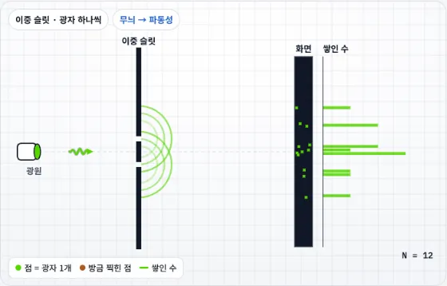
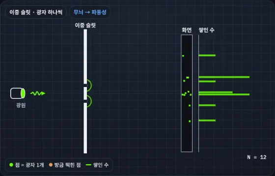
III2-01원리 애니메이션 빛의 이중성: 파동성과 입자성 빛은 파동인가 입자인가? 실험마다 다른 얼굴을 보이는 이유는?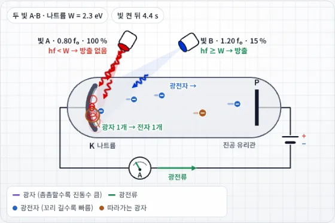
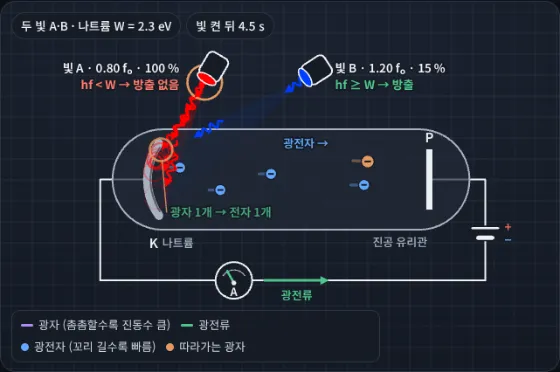
III2-02원리 애니메이션 광전 효과의 실험 사실과 파동설의 한계 빛을 세게 비추면 전자가 더 세게 튀어나와야 할 것 같은데, 실제는 왜 다를까?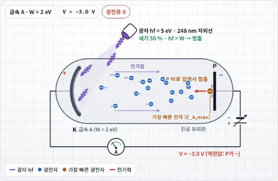
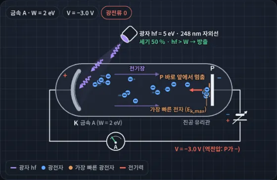
III2-03 광양자설과 광전 방정식 광자 하나의 에너지가 전자 하나에게 넘어갈 때, 그 에너지는 어디에 쓰일까?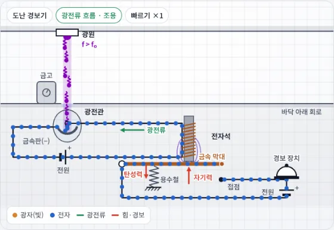
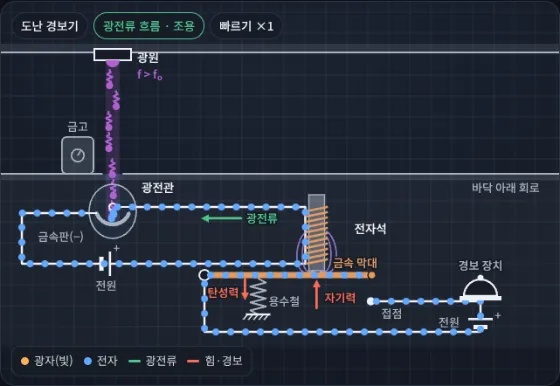
III2-04원리 애니메이션 광전 효과의 이용: 경보기와 센서 빛이 닿거나 끊기는 것을 어떻게 경보로 바꿀까?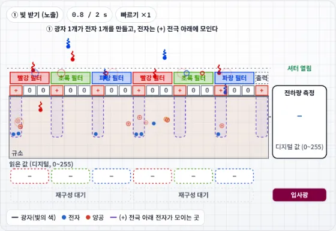
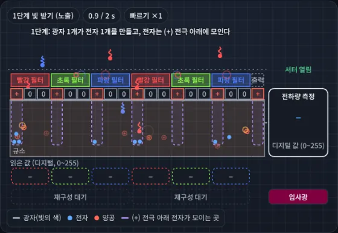
III2-05원리 애니메이션 영상 정보의 기록: 전하 결합 소자(CCD) 디지털카메라는 빛을 어떻게 영상 정보로 바꿀까?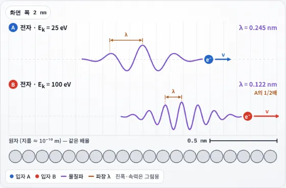
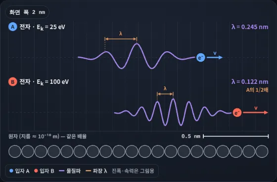
III2-06 물질파(드브로이 파) 빛이 입자처럼 행동한다면, 전자 같은 입자도 파동처럼 행동할 수 있을까?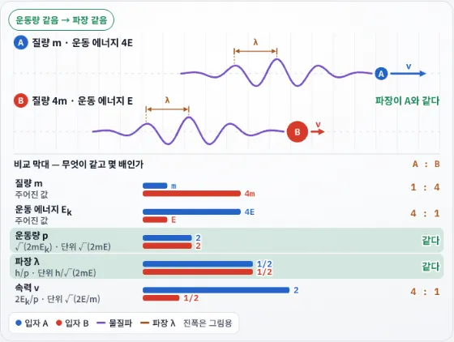
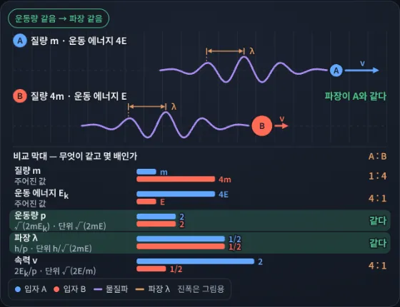
III2-07 물질파 그래프·표 해석과 변환 공식 축이 매번 바뀌는 물질파 그래프를 어떻게 한 가지 방법으로 읽을까?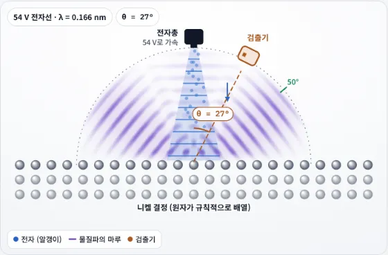
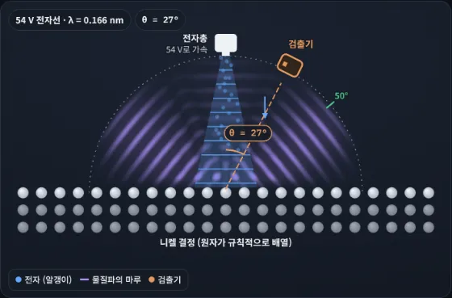
III2-08원리 애니메이션 입자의 파동성 증거 전자가 정말 파동이라면 어떤 실험에서 그 증거가 보일까?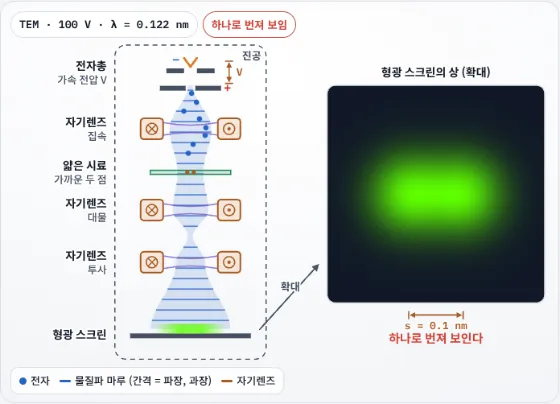
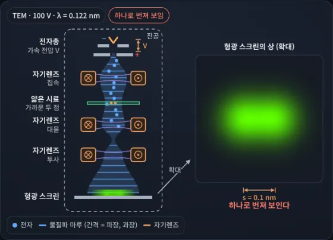
III2-09 전자 현미경 전자 현미경은 왜 광학 현미경보다 훨씬 작은 구조를 볼 수 있을까?